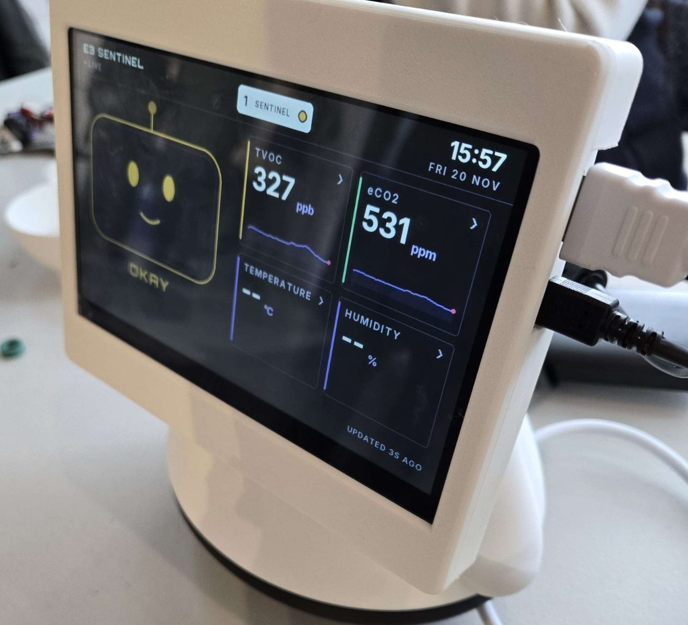

Sentinel robot
E3 Sentinel and Scout are a robot duo that monitors the MakerSpace so you don't have to.
| Status | Finished |
|---|---|
| Version | V1, built in 2 days |
| Dates | TODO: start and end dates |
| My role | All CAD and manufacturing: design, 3D printing and post-processing |
| Team | Other members did the electronics and software |

What it does
- Detects smoke and solder fumes
- Tracks humidity
- Reacts with animated expressions
- Buzzes when something is wrong
Goal and constraints
TODO: goal and requirements
Design
Mechanical (my work)
I did all the CAD and manufacturing. TODO: design decisions and why you made them
Electronics and software (other team members)
The electronics include an ESP32, a Raspberry Pi, sensors and displays.


Build
| Material | PLA |
|---|---|
| Process | 3D printing |
| Software | SolidWorks, Bambu Lab slicer |
Specs
TODO: specs with units
Testing and results
TODO
Problems and fixes
TODO
What I would change
TODO